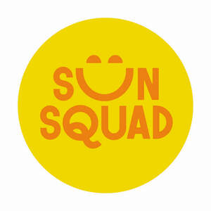

Trade Mark Journal No.2025/048 28 November 2025
UK00004268695 24 September 2025 (3,4,5,8,9,11,14,16,18,20,21,22,24,25,27,28,35)

- Class 3
- Non-medicated sun care preparations, namely, sun lotions and creams; non-medicated sun care preparations, namely, after sun lotions and creams.
- Class 4
- Candles.
- Class 5
- Hand-sanitizing preparations; insect repellants; anti-insect spray.
- Class 8
- Disposable tableware, namely, knives, forks and spoons; tableware, namely, knives, forks and spoons; flatware; flatware caddies specially designed for holding forks, knives and spoons; hand held cutting tools; lawn and garden tools, namely, rakes, shovels, spades, shears, trowels, manual clippers, and weeding forks.
- Class 9
- Sunglasses; sunglass cases; portable audio speakers.
- Class 11
- Electric decorative string lights; lighted decorations in the nature of electrically-illuminated lanterns; flashlights; decorative lighting in the nature of electrically-illuminated lighted figurines for outdoor decor; water coolers; electric fans.
- Class 14
- Novelty jewelry, namely, necklaces; key chains.
- Class 16
- Activity kits, namely, arts and crafts paint kits; paper party decorations; paper banners; paper napkins; paper decorative garland for parties; temporary tattoos; chalk; plastic containers, namely, plastic party favor gift boxes sold empty; party favor gift boxes sold empty; bags for favors sold empty, namely, plastic bags for wrapping, gift bags; paper table cloths and place mats; chalk erasers.
- Class 18
- All-purpose carrying bags; backpacks; beach bags; umbrellas.
- Class 20
- Furniture; outdoor furniture, namely, chairs, lounge chairs, lawn chairs, beach chairs, beach furniture, chaise lounges and camping furniture; plastic lawn ornaments; seasonal household ornaments and decorations of wood and plastic not for use on Christmas trees; plastic party ornaments; statues and figurines of plaster, plastic, and wood; lighted decorations, namely, inflatable figures for use as outdoor holiday decorations; .
- Class 21
- Non-electric bottle openers; kitchen tongs; dinnerware; disposable dinner ware, namely, plates, cups; flatware caddies, namely, caddies for dishes; marshmallow cooking forks; hot dog cooking forks; beverage ware; serving platters and dishes; bowls; pitchers; chip-and-dip dish sets comprised of dishware; ice buckets; garden sprinklers; non-electric coolers; food storage containers for household use; buckets for beverages; water bottles sold empty; utensils for barbecuing and grilling, namely, tongs, forks and turners; spatulas for kitchen use; non-electric portable beverages coolers; buckets; dinnerware, namely, paper plates and paper cups; cooking utensils, namely, campfire pie irons in the nature of cast iron food press for cooking over a campfire; cookie jars; carafes; ice cream scoops; beverage stands specially adapted for holding portable beverage dispensers; fitted picnic baskets.
- Class 22
- Hammocks.
- Class 24
- Plastic flags; plastic banners; towels, namely, cotton towels and beach towels; picnic blankets.
- Class 25
- Footwear; hats and headwear; headbands; aprons.
- Class 27
- Rugs; outdoor rugs; door mats; beach mats.
- Class 28
- Water toys; inflatable pool and beach toys; sand toys; swim floats for recreational use; beach balls; play tents; gift sets comprised of party games, card games, tabletop games, building games, ring games, and action skill games; stuffed and plush toys; piñatas; party games; bubble making wand and solution sets; balloons; balls for games; balls for sports; rubber balls; beach balls; jump ropes; party favors in the nature of small toys; toy animals; toy vehicles, boats and airplanes; water squirting toys; wind-up toys; toy novelty sunglasses; glow toys comprised of toy glow sticks, play wands; soft sculpture plush toys and stuffed plush toys; toy novelty jewelry, namely, necklaces; dolls; playing cards and card games; tossing disc toys; toy guns; paper party favors; toy motorized bubble machines; beanbag toss games; croquet and lawn bowling sets; gardening and beach toys, namely, buckets, shovels, rakes, watering cans, sifters, hoes, pruners, trowels, cultivators and toy garden implements; swim fins; pumps specially adapted for use with balls for games; toy action figures; toy whistles; glow toys, namely, toy whistles, toy swords, and toy jewelry; toy fishing sets comprising toy fishing rods and nets, toy fish, and children's dress up costumes in the nature of fishing vests and hats; toy campfire sets comprised of toy logs and toy skewers; toy picnic baskets; toy barbecue grills and accessories therefor; toy magnifiers; toy telescopes; toy flashlights and lanterns; toys and bug jars; toy wheelbarrows; toy outdoor furniture; children's multiple activity tables; toy scooters and ride-on toys; toys, namely bean bags.
- Class 35
- Retail department store services and online retail department store services in connection with the sale of non-medicated sun care preparations (namely, sun lotions and creams), non-medicated sun care preparations (namely, after sun lotions and creams), candles, hand-sanitizing preparation, insect repellants, anti-insect spray, disposable tableware (namely, knives, forks and spoons), tableware (namely, knives, forks and spoons), flatware, flatware caddies specially designed for holding forks, knives and spoons, hand held cutting tools, lawn and garden tools (namely, rakes, shovels, spades, shears, trowels, manual clippers, and weeding forks), sunglasses, sunglass cases, portable audio speakers, electric decorative string lights, lighted decorations in the nature of electrically-illuminated lanterns, flashlights, decorative lighting in the nature of electrically-illuminated lighted figurines for outdoor décor, water coolers, electric fans, novelty jewelry (namely, necklaces), key chains, activity kits (namely, arts and crafts paint kits), paper party decorations, paper banners, paper napkins, paper decorative garland for parties, temporary tattoos, chalk, plastic containers (namely, plastic party favor gift boxes sold empty), party favor gift boxes sold empty, bags for favors sold empty (namely, plastic bags for wrapping, gift bags), paper table cloths and place mats, chalk erasers, all-purpose carrying bags, backpacks, beach bags, umbrellas, furniture, outdoor furniture (namely, chairs, lounge chairs, lawn chairs, beach chairs, beach furniture, chaise lounges and camping furniture), plastic lawn ornaments, seasonal household ornaments and decorations of wood and plastic not for use on Christmas trees, plastic party ornaments, statues and figurines of plaster, plastic, and wood, lighted decorations (namely, inflatable figures for use as outdoor holiday decorations), non-electric bottle openers, kitchen tongs, dinnerware, disposable dinner ware (namely, plates, cups), flatware caddies (namely, caddies for dishes), marshmallow cooking forks, hot dog cooking forks, beverage ware, serving platters and dishes, bowls, pitchers, chip-and-dip dish sets comprised of dishware, ice buckets, garden sprinklers, non-electric coolers, food storage containers for household use, buckets for beverages, water bottles sold empty, utensils for barbecuing and grilling (namely, tongs, forks and turners), spatulas for kitchen use, non-electric portable beverages coolers, buckets, dinnerware (namely, paper plates and paper cups), cooking utensils (namely, campfire pie irons in the nature of cast iron food press for cooking over a campfire), cookie jars, carafes, ice cream scoops, beverage stands specially adapted for holding portable beverage dispensers, fitted picnic baskets, hammocks, plastic flags, plastic banners, towels (namely, cotton towels and beach towels), picnic blankets, footwear, hats and headwear, headbands, aprons, rugs, outdoor rugs, door mats, beach mats, water toys, inflatable pool and beach toys, sand toys, swim floats for recreational use, beach balls, play tents, gift sets (comprised of party games, card games, tabletop games, building games, ring games, and action skill games), stuffed and plush toys, piñatas, party games, bubble making wand and solution sets, balloons, balls for games, balls for sports, rubber balls, beach balls, jump ropes, party favors in the nature of small toys, toy animals, toy vehicles, boats and airplanes, water squirting toys, wind-up toys, toy novelty sunglasses, glow toys comprised of toy glow sticks, play wands, soft sculpture plush toys and stuffed plush toys, toy novelty jewelry (namely, necklaces), dolls, playing cards and card games, tossing disc toys, toy guns, paper party favors, toy motorized bubble machines, beanbag toss games, croquet and lawn bowling sets, gardening and beach toys (namely, buckets, shovels, rakes, watering cans, sifters, hoes, pruners, trowels, cultivators and toy garden implements), swim fins, pumps specially adapted for use with balls for games, toy action figures, toy whistles, glow toys (namely, toy whistles, toy swords, and toy jewelry), bean bags, toy fishing sets comprising toy fishing rods and nets, toy fish, and children's dress up costumes in the nature of fishing vests and hats, toy campfire sets comprised of toy logs and toy skewers, toy picnic baskets, toy barbecue grills and accessories therefor, toy magnifiers, toy telescopes, toy flashlights and lanterns, toys and bug jars, toy wheelbarrows, toy outdoor furniture, children's multiple activity tables, toy scooters and ride-on toys; wholesale store services in connection with the sale of non-medicated sun care preparations (namely, sun lotions and creams), non-medicated sun care preparations (namely, after sun lotions and creams), candles, hand-sanitizing preparation, insect repellants, anti-insect spray, disposable tableware (namely, knives, forks and spoons), tableware (namely, knives, forks and spoons), flatware, flatware caddies specially designed for holding forks, knives and spoons, hand held cutting tools, lawn and garden tools (namely, rakes, shovels, spades, shears, trowels, manual clippers, and weeding forks), sunglasses, sunglass cases, portable audio speakers, electric decorative string lights, lighted decorations in the nature of electrically-illuminated lanterns, flashlights, decorative lighting in the nature of electrically-illuminated lighted figurines for outdoor décor, water coolers, electric fans, novelty jewelry (namely, necklaces), key chains, activity kits (namely, arts and crafts paint kits), paper party decorations, paper banners, paper napkins, paper decorative garland for parties, temporary tattoos, chalk, plastic containers (namely, plastic party favor gift boxes sold empty), party favor gift boxes sold empty, bags for favors sold empty (namely, plastic bags for wrapping, gift bags), paper table cloths and place mats, chalk erasers, all-purpose carrying bags, backpacks, beach bags, umbrellas, furniture, outdoor furniture (namely, chairs, lounge chairs, lawn chairs, beach chairs, beach furniture, chaise lounges and camping furniture), plastic lawn ornaments, seasonal household ornaments and decorations of wood and plastic not for use on Christmas trees, plastic party ornaments, statues and figurines of plaster, plastic, and wood, lighted decorations (namely, inflatable figures for use as outdoor holiday decorations), non-electric bottle openers, kitchen tongs, dinnerware, disposable dinner ware (namely, plates, cups), flatware caddies (namely, caddies for dishes), marshmallow cooking forks, hot dog cooking forks, beverage ware, serving platters and dishes, bowls, pitchers, chip-and-dip dish sets comprised of dishware, ice buckets, garden sprinklers, non-electric coolers, food storage containers for household use, buckets for beverages, water bottles sold empty, utensils for barbecuing and grilling (namely, tongs, forks and turners), spatulas for kitchen use, non-electric portable beverages coolers, buckets, dinnerware (namely, paper plates and paper cups), cooking utensils (namely, campfire pie irons in the nature of cast iron food press for cooking over a campfire), cookie jars, carafes, ice cream scoops, beverage stands specially adapted for holding portable beverage dispensers, fitted picnic baskets, hammocks, plastic flags, plastic banners, towels (namely, cotton towels and beach towels), picnic blankets, footwear, hats and headwear, headbands, aprons, rugs, outdoor rugs, door mats, beach mats, water toys, inflatable pool and beach toys, sand toys, swim floats for recreational use, beach balls, play tents, gift sets (comprised of party games, card games, tabletop games, building games, ring games, and action skill games), stuffed and plush toys, piñatas, party games, bubble making wand and solution sets, balloons, balls for games, balls for sports, rubber balls, beach balls, jump ropes, party favors in the nature of small toys, toy animals, toy vehicles, boats and airplanes, water squirting toys, wind-up toys, toy novelty sunglasses, glow toys comprised of toy glow sticks, play wands, soft sculpture plush toys and stuffed plush toys, toy novelty jewelry (namely, necklaces), dolls, playing cards and card games, tossing disc toys, toy guns, paper party favors, toy motorized bubble machines, beanbag toss games, croquet and lawn bowling sets, gardening and beach toys (namely, buckets, shovels, rakes, watering cans, sifters, hoes, pruners, trowels, cultivators and toy garden implements), swim fins, pumps specially adapted for use with balls for games, toy action figures, toy whistles, glow toys (namely, toy whistles, toy swords, and toy jewelry), bean bags, toy fishing sets comprising toy fishing rods and nets, toy fish, and children's dress up costumes in the nature of fishing vests and hats, toy campfire sets comprised of toy logs and toy skewers, toy picnic baskets, toy barbecue grills and accessories therefor, toy magnifiers, toy telescopes, toy flashlights and lanterns, toys and bug jars, toy wheelbarrows, toy outdoor furniture, children's multiple activity tables, toy scooters and ride-on toys; online wholesale store services in connection with the sale of non-medicated sun care preparations (namely, sun lotions and creams), non-medicated sun care preparations (namely, after sun lotions and creams), candles, hand-sanitizing preparation, insect repellants, anti-insect spray, disposable tableware (namely, knives, forks and spoons), tableware (namely, knives, forks and spoons), flatware, flatware caddies specially designed for holding forks, knives and spoons, hand held cutting tools, lawn and garden tools (namely, rakes, shovels, spades, shears, trowels, manual clippers, and weeding forks), sunglasses, sunglass cases, portable audio speakers, electric decorative string lights, lighted decorations in the nature of electrically-illuminated lanterns, flashlights, decorative lighting in the nature of electrically-illuminated lighted figurines for outdoor décor, water coolers, electric fans, novelty jewelry (namely, necklaces), key chains, activity kits (namely, arts and crafts paint kits), paper party decorations, paper banners, paper napkins, paper decorative garland for parties, temporary tattoos, chalk, plastic containers (namely, plastic party favor gift boxes sold empty), party favor gift boxes sold empty, bags for favors sold empty (namely, plastic bags for wrapping, gift bags), paper table cloths and place mats, chalk erasers, all-purpose carrying bags, backpacks, beach bags, umbrellas, furniture, outdoor furniture (namely, chairs, lounge chairs, lawn chairs, beach chairs, beach furniture, chaise lounges and camping furniture), plastic lawn ornaments, seasonal household ornaments and decorations of wood and plastic not for use on Christmas trees, plastic party ornaments, statues and figurines of plaster, plastic, and wood, lighted decorations (namely, inflatable figures for use as outdoor holiday decorations), non-electric bottle openers, kitchen tongs, dinnerware, disposable dinner ware (namely, plates, cups), flatware caddies (namely, caddies for dishes), marshmallow cooking forks, hot dog cooking forks, beverage ware, serving platters and dishes, bowls, pitchers, chip-and-dip dish sets comprised of dishware, ice buckets, garden sprinklers, non-electric coolers, food storage containers for household use, buckets for beverages, water bottles sold empty, utensils for barbecuing and grilling (namely, tongs, forks and turners), spatulas for kitchen use, non-electric portable beverages coolers, buckets, dinnerware (namely, paper plates and paper cups), cooking utensils (namely, campfire pie irons in the nature of cast iron food press for cooking over a campfire), cookie jars, carafes, ice cream scoops, beverage stands specially adapted for holding portable beverage dispensers, fitted picnic baskets, hammocks, plastic flags, plastic banners, towels (namely, cotton towels and beach towels), picnic blankets, footwear, hats and headwear, headbands, aprons, rugs, outdoor rugs, door mats, beach mats, water toys, inflatable pool and beach toys, sand toys, swim floats for recreational use, beach balls, play tents, gift sets (comprised of party games, card games, tabletop games, building games, ring games, and action skill games), stuffed and plush toys, piñatas, party games, bubble making wand and solution sets, balloons, balls for games, balls for sports, rubber balls, beach balls, jump ropes, party favors in the nature of small toys, toy animals, toy vehicles, boats and airplanes, water squirting toys, wind-up toys, toy novelty sunglasses, glow toys comprised of toy glow sticks, play wands, soft sculpture plush toys and stuffed plush toys, toy novelty jewelry (namely, necklaces), dolls, playing cards and card games, tossing disc toys, toy guns, paper party favors, toy motorized bubble machines, beanbag toss games, croquet and lawn bowling sets, gardening and beach toys (namely, buckets, shovels, rakes, watering cans, sifters, hoes, pruners, trowels, cultivators and toy garden implements), swim fins, pumps specially adapted for use with balls for games, toy action figures, toy whistles, glow toys (namely, toy whistles, toy swords, and toy jewelry), bean bags, toy fishing sets comprising toy fishing rods and nets, toy fish, and children's dress up costumes in the nature of fishing vests and hats, toy campfire sets comprised of toy logs and toy skewers, toy picnic baskets, toy barbecue grills and accessories therefor, toy magnifiers, toy telescopes, toy flashlights and lanterns, toys and bug jars, toy wheelbarrows, toy outdoor furniture, children's multiple activity tables, toy scooters and ride-on toys.
Target Brands, Inc.
Representative: Cleveland Scott York